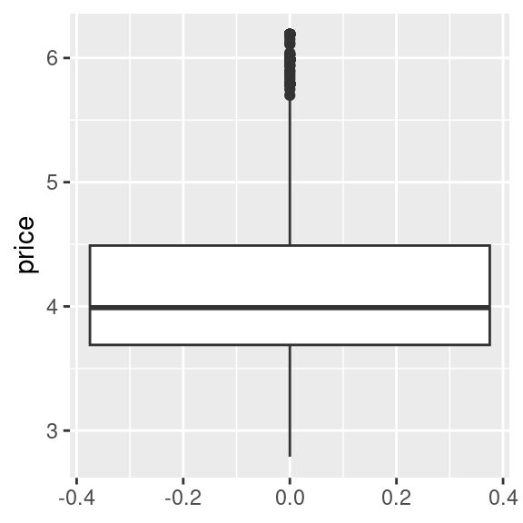
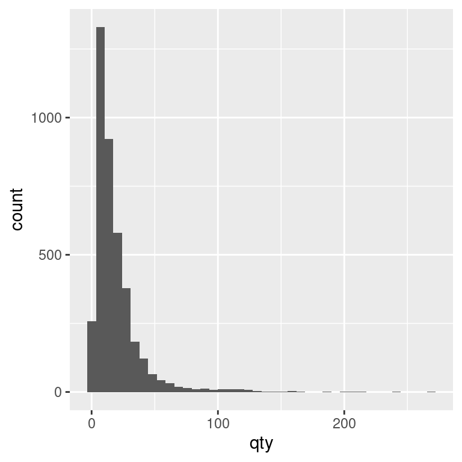
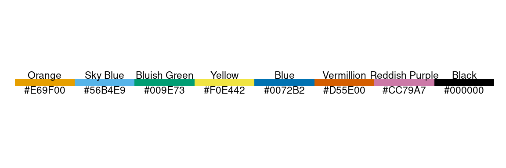
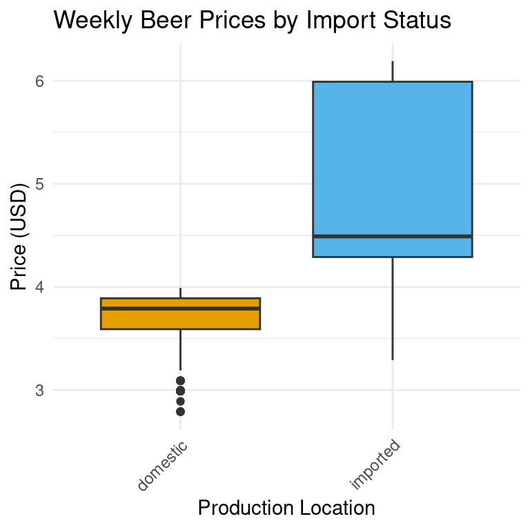

# A tibble: 10 × 6
store week brand qty price imported
<dbl> <dbl> <chr> <dbl> <dbl> <chr>
1 86 91 Budweiser 23 3.49 domestic
2 86 91 Corona 13 5.79 imported
3 86 91 Lowenbrau 13 3.99 imported
4 86 91 Miller 15 3.69 domestic
5 86 92 Budweiser 46 3.49 domestic
6 86 92 Corona 24 5.79 imported
7 86 92 Lowenbrau 21 3.99 imported
8 86 92 Miller 117 2.99 domestic
9 86 93 Budweiser 47 3.49 domestic
10 86 93 Corona 23 4.39 imported4 Data Visualisation for Business Intelligence
Learning Goals
By the end of this lecture, you should be able to:
- Explain how different visualization techniques reveal patterns in retail beer data that would be difficult to see in tables or raw numbers.
- Implement appropriate visualizations using ggplot2 to analyze relationships between beer prices, sales volumes, and product characteristics.
- Compare price elasticity patterns between domestic and imported beer brands using log-log demand curve visualizations.
- Assess which visualization approaches most effectively communicate specific insights about beer pricing and demand.
- Design a visual analysis that could inform practical pricing decisions for a retail category manager.
4.1 The Business Challenge
The Topic: Understanding Price Sensitivity in Beer Sales
- Australian retailers make thousands of pricing decisions
- 1% improvement in pricing → 11% profit increase
- Beer: $16.8 billion Australian market
- Our question today: How do price changes affect sales across different beer brands?
The Data: Retail Scanner Data from Dominick’s Finer Foods
- Weekly sales for four major beer brands for a Chicago based retailer
- Price, quantity, store location, and promotional information
- Similar to what Woolworths and Coles analysts work with daily
- Real-world retail data to discover real-world patterns{.unnumbered}
The Method: Data Visualization
“The greatest value of a picture is when it forces us to notice what we never expected to see.” — John Tukey
- Visual processing is 60,000× faster than text - spot patterns and outliers instantly
- Bridges the gap between data scientists and business decision-makers
- Reveals hidden relationships that drive consumer behavior and pricing effectiveness
- Transforms complex numerical relationships into actionable insights for category managers
Next speil
- Graphs are essential to data storytelling—they reveal both broad patterns and key details
- Seeing the data builds understanding—graphs help us engage with data in ways tables and summaries cannot.
- Good graphs minimize information loss—they translate data into visuals that audiences can easily interpret and act on
- Graphing is an encoding process—we design visuals to communicate insights, and their success depends on how well the audience decodes them.
- Effective graphs are audience-focused—they should clearly convey the story behind the data while preserving its context.
Where we’re headed
Just a few lines of R code transform numbers into business intelligence
From this:
to this (REMARK Still need to complete the pretty-ing of plots)
`geom_smooth()` using formula = 'y ~ x'
4.2 The Game Plan: What we’re aiming for
Recall our workflow:
- Define the Business Question & Plan Outputs
- Acquire and Prepare Data
- Explore and Visualize Patterns
- Analyze and Interpret Findings
- Communicate Insights and Recommendations
Sketch of the plan: 1 business question & 3 plots …
Let’s get started!
4.3 Loading and Understanding the Data
R packages for today
TO DO: Add Spiel on ggplot2 as a data viz package.
library(tidyverse) # for plotting, includes ggplot
library(patchwork) # for combining multiple plots into subfigures
library(scales) # for formatting axis scales
library(ggokabeito) # color blind friendly color palette -- this course's defaultLoading the Data in R
beer <- read_csv("https://raw.githubusercontent.com/unimelb-cmce-10002/fba-book/refs/heads/main/data/beer.csv")The Beer Sales Dataframe
Explore data frame, define any necessary terms
beer# A tibble: 4,033 × 17
store week brand upc qty price sales_indicator city price_tier zone
<dbl> <dbl> <chr> <dbl> <dbl> <dbl> <lgl> <chr> <chr> <dbl>
1 86 91 Budwei… 1.82e9 23 3.49 FALSE Chic… medium 2
2 86 91 Corona 8.07e9 13 5.79 FALSE Chic… medium 2
3 86 91 Lowenb… 3.41e9 13 3.99 FALSE Chic… medium 2
4 86 91 Miller 3.41e9 15 3.69 FALSE Chic… medium 2
5 86 92 Budwei… 1.82e9 46 3.49 FALSE Chic… medium 2
6 86 92 Corona 8.07e9 24 5.79 FALSE Chic… medium 2
7 86 92 Lowenb… 3.41e9 21 3.99 FALSE Chic… medium 2
8 86 92 Miller 3.41e9 117 2.99 FALSE Chic… medium 2
9 86 93 Budwei… 1.82e9 47 3.49 FALSE Chic… medium 2
10 86 93 Corona 8.07e9 23 4.39 FALSE Chic… medium 2
# ℹ 4,023 more rows
# ℹ 7 more variables: zip <dbl>, address <chr>, latitude <dbl>,
# longtitude <dbl>, start_of_week <date>, is_holiday_week <lgl>,
# imported <chr>glimpse(beer)Rows: 4,033
Columns: 17
$ store <dbl> 86, 86, 86, 86, 86, 86, 86, 86, 86, 86, 86, 86, 86, 86…
$ week <dbl> 91, 91, 91, 91, 92, 92, 92, 92, 93, 93, 93, 93, 94, 94…
$ brand <chr> "Budweiser", "Corona", "Lowenbrau", "Miller", "Budweis…
$ upc <dbl> 1820000016, 8066095605, 3410021505, 3410000554, 182000…
$ qty <dbl> 23, 13, 13, 15, 46, 24, 21, 117, 47, 23, 34, 118, 46, …
$ price <dbl> 3.49, 5.79, 3.99, 3.69, 3.49, 5.79, 3.99, 2.99, 3.49, …
$ sales_indicator <lgl> FALSE, FALSE, FALSE, FALSE, FALSE, FALSE, FALSE, FALSE…
$ city <chr> "Chicago", "Chicago", "Chicago", "Chicago", "Chicago",…
$ price_tier <chr> "medium", "medium", "medium", "medium", "medium", "med…
$ zone <dbl> 2, 2, 2, 2, 2, 2, 2, 2, 2, 2, 2, 2, 2, 2, 2, 2, 2, 2, …
$ zip <dbl> 60618, 60618, 60618, 60618, 60618, 60618, 60618, 60618…
$ address <chr> "3350 Western Ave", "3350 Western Ave", "3350 Western …
$ latitude <dbl> 41.94235, 41.94235, 41.94235, 41.94235, 41.94235, 41.9…
$ longtitude <dbl> -87.68999, -87.68999, -87.68999, -87.68999, -87.68999,…
$ start_of_week <date> 1991-06-06, 1991-06-06, 1991-06-06, 1991-06-06, 1991-…
$ is_holiday_week <lgl> FALSE, FALSE, FALSE, FALSE, FALSE, FALSE, FALSE, FALSE…
$ imported <chr> "domestic", "imported", "imported", "domestic", "domes…TODO: So what is the business question?
4.4 Visualizing the Data
Detour: Viz principles + ggplot “building”
Investigating Price Distributions
Set the Canvas
ggplot(beer)
Choose a geom
ggplot(beer) +
geom_boxplot()Specify the aesthetic
ggplot(beer) +
geom_boxplot(aes(y = price))
Now do it for import/non-import (and we talk about why)
ggplot(beer) +
geom_boxplot(aes(y = price, x = imported))
Describe findings. Why might prices of imported beers be higher?
Note what we have done so far prints the plot, can store for later
price_box <-
ggplot(beer) +
geom_boxplot(aes(y = price, x = imported))Then to see the output
price_box
5 min
- Create a box plot comparing the prices across different beer brands.
- Summarize the main insights from the graph in 2 sentences.
Solution
ggplot(beer) +
geom_boxplot(aes(y = price, x = brand))
Exploring Quantity Sold
Histogram
ggplot(beer) +
geom_histogram(aes(x = qty))`stat_bin()` using `bins = 30`. Pick better value with `binwidth`.
ggplot(beer) +
geom_histogram(aes(x = qty), binwidth = 5)OR equivalently
ggplot(beer) +
geom_histogram(aes(x = qty), bins = 40)Density Plot
ggplot(beer) +
geom_density(aes(x = qty))
ggplot(beer) +
geom_density(aes(x = qty, fill = imported), alpha = 0.35)
Explain the findings …
5 min
- Create histograms and density plots to visualize the distribution of quantity sold across different beer brands
- Create histograms and density plots to visualize the distribution of the prices across different beer brands
Solution
ggplot(beer) +
geom_density(aes(x = qty, fill = brand), alpha = 0.35)
ggplot(beer) +
geom_density(aes(x = price, fill = brand), alpha = 0.35)
Detour: Adding Style to our plots
THINGS TO CONSIDER:
- Color / fill
- Themes
- other geom_ ’s
- titles
- labels
- scales
REMARK: leave themes and geom_’s to homework to explore
Where we end up in this section
price_plot <-
ggplot(beer) +
geom_boxplot(aes(y = price, x = imported, fill = imported)) +
scale_y_continuous(
breaks = c(3, 4, 5, 6),
labels = scales::dollar
) +
scale_fill_okabe_ito() +
theme(legend.position = "none") +
labs(y = "Price", x = "Production Location")
price_plot
5 min
- Customize the sales density plot to use the Okabe-Ito color palette and add axis labels.
sales_plot <-
ggplot(beer) +
geom_density(aes(x = qty, fill = imported),
alpha = 0.35
) +
scale_fill_okabe_ito()
sales_plot
Creating Demand Curves
Now, we want to move onto visualizing two dimensions of data, to explore how demand varies with price.
ggplot(beer) +
geom_point(aes(y = price, x = qty),
color = "steelblue",
alpha = 0.25
)Not so pretty as raw data …
TODO: Now move to log-log- with explanation as to why this is useful
ggplot(beer) +
geom_point(aes(y = log(price), x = log(qty)),
color = "steelblue",
alpha = 0.25
)
An alternative way to do this is:
ggplot(beer) +
geom_point(aes(y = price, x = qty),
color = "steelblue",
alpha = 0.25
) +
# Natural log scale for x-axis with meaningful breaks
scale_x_continuous(
trans = "log",
breaks = c(1, 2, 5, 10, 20, 50, 100, 200),
#labels = scales::comma
) +
# Natural log scale for y-axis with meaningful breaks
scale_y_continuous(
trans = "log",
breaks = c(3, 4, 5, 6),
labels = scales::dollar
) +
labs(x = "Quantity", y = "Price")Note that this preserves the axes as linear scales, but the data is transformed to log scales.
We can add a third piece of information to this plot – whether the beer is imported or not
Separate by import status
ggplot(beer) +
geom_point(aes(y = price, x = qty,
color = imported),
alpha = 0.25
) +
# Natural log scale for x-axis with meaningful breaks
scale_x_continuous(
trans = "log",
breaks = c(1, 2, 5, 10, 20, 50, 100, 200)#,
#labels = scales::comma
) +
# Natural log scale for y-axis with meaningful breaks
scale_y_continuous(
trans = "log",
breaks = c(3, 4, 5, 6),
labels = scales::dollar
) +
labs(x = "Quantity", y = "Price") +
scale_color_okabe_ito() +
theme(legend.position = "bottom")Sometimes we don’t only want to color the points, but have separate plots for different groups of products …
Separate plots with faceting
ggplot(beer) +
geom_point(aes(y = price, x = qty,
color = imported),
alpha = 0.25
) +
# Natural log scale for x-axis with meaningful breaks
scale_x_continuous(
trans = "log",
breaks = c(1, 2, 5, 10, 20, 50, 100, 200) #,
#labels = scales::comma
) +
# Natural log scale for y-axis with meaningful breaks
scale_y_continuous(
trans = "log",
breaks = c(3, 4, 5, 6),
labels = scales::dollar
) +
labs(x = "Quantity", y = "Price") +
facet_wrap(~ imported) +
scale_color_okabe_ito() +
theme(legend.position = "bottom")
Now quick summary of the business insights from this plot.
Until now, we’ve always had one layer of geom_ in our plots. ggplot allows us to add more. Let’s do this by adding a demand curve to the plot …
Add a demand curve, i.e. add an extra layer
ggplot(beer) +
geom_point(aes(y = price, x = qty,
color = imported),
alpha = 0.25
) +
geom_smooth(aes(y = price, x = qty),
method = "lm",
color = "#CC79A7",
se = TRUE) +
# Natural log scale for x-axis with meaningful breaks
scale_x_continuous(
trans = "log",
breaks = c(1, 2, 5, 10, 20, 50, 100, 200)#,
#labels = scales::comma
) +
# Natural log scale for y-axis with meaningful breaks
scale_y_continuous(
trans = "log",
breaks = c(3, 4, 5, 6),
labels = scales::dollar
) +
labs(x = "Quantity", y = "Price") +
facet_wrap(~ imported) +
scale_color_okabe_ito() +
theme(legend.position = "bottom")`geom_smooth()` using formula = 'y ~ x'
Note we had to write aes twice, if we are going to use the same aesthetics for multiple layers, we can put in the ggplot() function
demand_by_import <-
ggplot(beer,
aes(y = price, x = qty,
color = imported
)
) +
geom_point(alpha = 0.25) +
geom_smooth(method = "lm",
color = "#CC79A7",
se = TRUE) +
# Natural log scale for x-axis with meaningful breaks
scale_x_continuous(
trans = "log",
breaks = c(1, 2, 5, 10, 20, 50, 100, 200) #,
#labels = scales::comma
) +
# Natural log scale for y-axis with meaningful breaks
scale_y_continuous(
trans = "log",
breaks = c(3, 4, 5, 6),
labels = scales::dollar
) +
labs(x = "Quantity", y = "Price") +
facet_wrap(~ imported) +
scale_color_okabe_ito() +
theme(legend.position = "bottom")
demand_by_import`geom_smooth()` using formula = 'y ~ x'
Exercise. Do this by brand rather than by import status
5 min
- Modify the plot above to create separate subplots for brands rather than import status.
Solution
demand_by_brand <-
ggplot(beer,
aes(y = log(price), x = log(qty))
) +
geom_point(color = "steelblue",
alpha = 0.25
) +
geom_smooth(method = "lm", color = "#CC79A7") +
facet_wrap(~ brand)
demand_by_brand`geom_smooth()` using formula = 'y ~ x'
4.5 Bringing it all together: Sharing Our Results
Final plot. (Still needs some editing to match the first one)
demand_by_import /
(price_plot | sales_plot) +
plot_layout(guides = "collect") &
theme(legend.position = "bottom")`geom_smooth()` using formula = 'y ~ x'
5 min
Write 2-3 sentence summary of the main takeaways from the visualization that you could send to a category manager
10 min
- Construct a similar plot to the one we’ve constructed above, but separate the plots by brand rather than import status.
- Write 2-3 sentence summary of the main takeaways from the visualization that you could send to a category manager
4.6 An Aside: Always visualize the data!
Why have we started with data visualisation? It’s because we believe no matter what business analytics task you perform, you should always start with visualising the data.
Why is that the case? Consider the following. We collect 13 data sets.
library(datasauRus)
my_data <- datasaurus_dozenNow we look at summary statistics about them:
| Dataset | x mean | x sd | y mean | y sd |
|---|---|---|---|---|
| dino | 54.3 | 16.8 | 47.8 | 26.9 |
| away | 54.3 | 16.8 | 47.8 | 26.9 |
| h_lines | 54.3 | 16.8 | 47.8 | 26.9 |
| v_lines | 54.3 | 16.8 | 47.8 | 26.9 |
| x_shape | 54.3 | 16.8 | 47.8 | 26.9 |
| star | 54.3 | 16.8 | 47.8 | 26.9 |
| high_lines | 54.3 | 16.8 | 47.8 | 26.9 |
| dots | 54.3 | 16.8 | 47.8 | 26.9 |
| circle | 54.3 | 16.8 | 47.8 | 26.9 |
| bullseye | 54.3 | 16.8 | 47.8 | 26.9 |
| slant_up | 54.3 | 16.8 | 47.8 | 26.9 |
| slant_down | 54.3 | 16.8 | 47.8 | 26.9 |
| wide_lines | 54.3 | 16.8 | 47.8 | 26.9 |
Summary statistics are identical for all datasets. But when we plot them, we see there are very different patterns in each dataset:
ggplot(my_data,
aes(x = x,
y = y)) +
geom_point() +
facet_wrap(~dataset, ncol = 3)
Without visualising the data, we likely would have missed these very different patterns.
4.7 Conclusion
We’ve covered a lot. Two main themes
- The process of creating a ggplot:
- Initialize the Plot with ggplot() – Define the dataset and aesthetic mappings (aes()).
- Add Geometric Layers (geom_*) – Choose a geom function to represent the data (e.g., points, bars, lines).
- Customize the Appearance – Modify labels, themes, colors, and axes.
- (Optional) Add Statistical Transformations and Annotations – Include trend lines, facets, or text annotations.
- We’ve highlighted one key principle of effective data visualisation per plot:
- With price boxplot: “Choose visualizations appropriate to your question”
- With density plots: “Color enhances categorical comparison”
- With demand curves: “Transformations (like log scales) can reveal patterns”
- With faceting: “Small multiples help compare across groups”
- With statistical transformations: “Summarizing data (like smoothing or regression) highlights trends”
Using 1 + 2 together gave us business intelligence … and let us tell stories with data.
4.8 Your To Do List
…